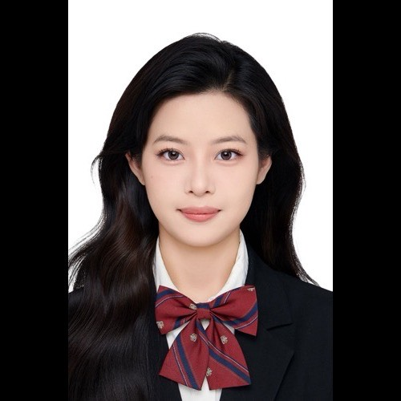
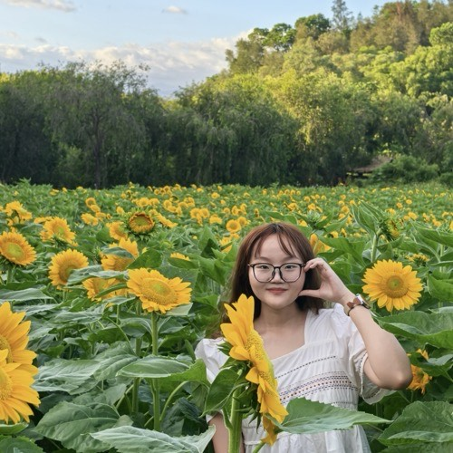
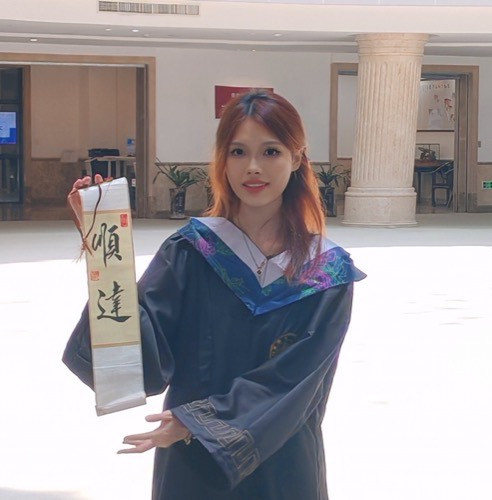
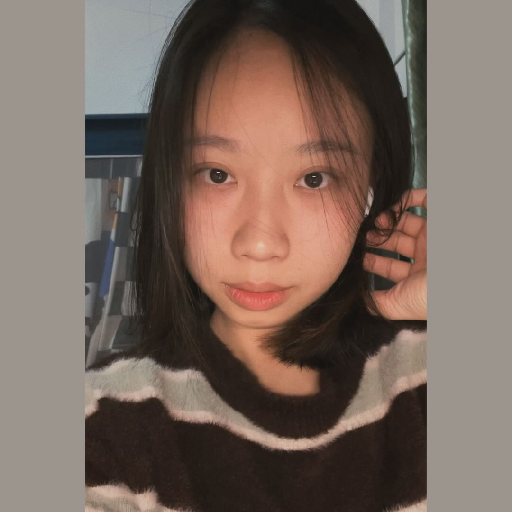
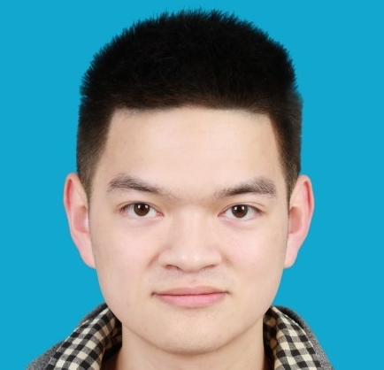
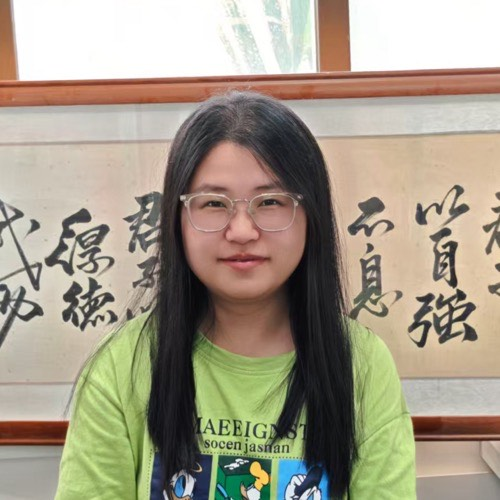
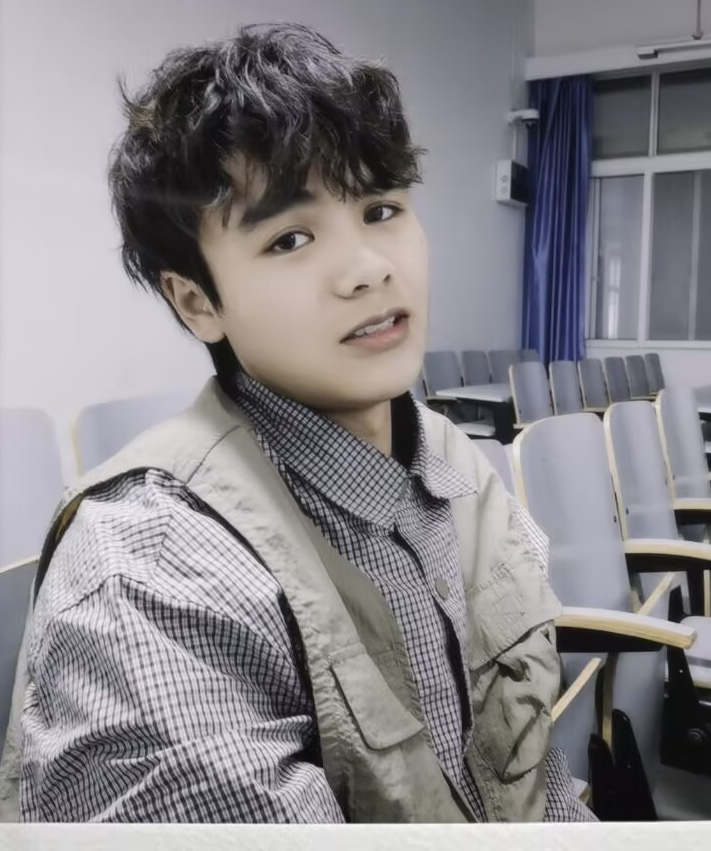

Shu-He Wang, 王舒禾 (Lily )
Master's Student
Halomonas bluephagenesis TD01 producing mcl-PHA.

Yi-Na Xiong, 熊依娜 (Amber)
Master's Student
Focusing on microbial metabolism and antibiotic mechanism research.

Fei Zhu, 朱菲 (Feena)
Master's Student
Using bioinformatics to mine new gene editing tools.

Yi-Tong Lin, 林依橦 (Lynette)
Master's Student
Semi-rational design and rearrangement of metabolic pathways in non-model microorganisms through metabolic engineering to improve production of bulk chemicals.

Zheng-Mao Huang, 黄正茂 (Marcus)
Master's Student
I love Zymo and table tennis!

Nan Yang, 杨楠
Master's Student
Developing novel synthetic biology toolkits and optimizing them for genome editing in non-model microorganisms, aiming for biological control or synthesis of high-value-added products.

Tai-Jiang Chen, 陈泰江 (Tyler)
Master's Student
Metabolic pathway modification and optimization of Halomonas using metabolic engineering and adaptive laboratory evolution to develop next-generation halophilic Halomonas strains.